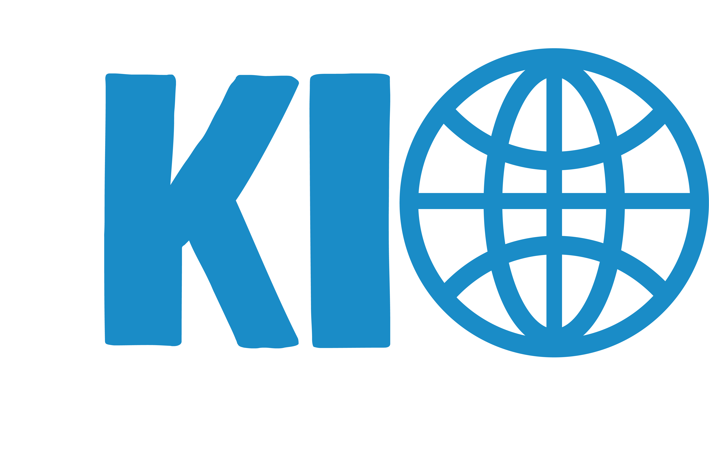

Home
Het is: Internationaliseringsmonitor
Bekijk de animatie hieronder
Sinds 2019 publiceert KIO een grote publicatie waarbij al het globaliseringsonderzoek cijfermatig bijelkaar staat en welke elk jaar wordt geactualiseerd. Hoe heet deze publicatie?
Globaliseringsonderzoek
Waardeketenonderzoek
Bedrijvendemografie
Nederlands handelsland
Top